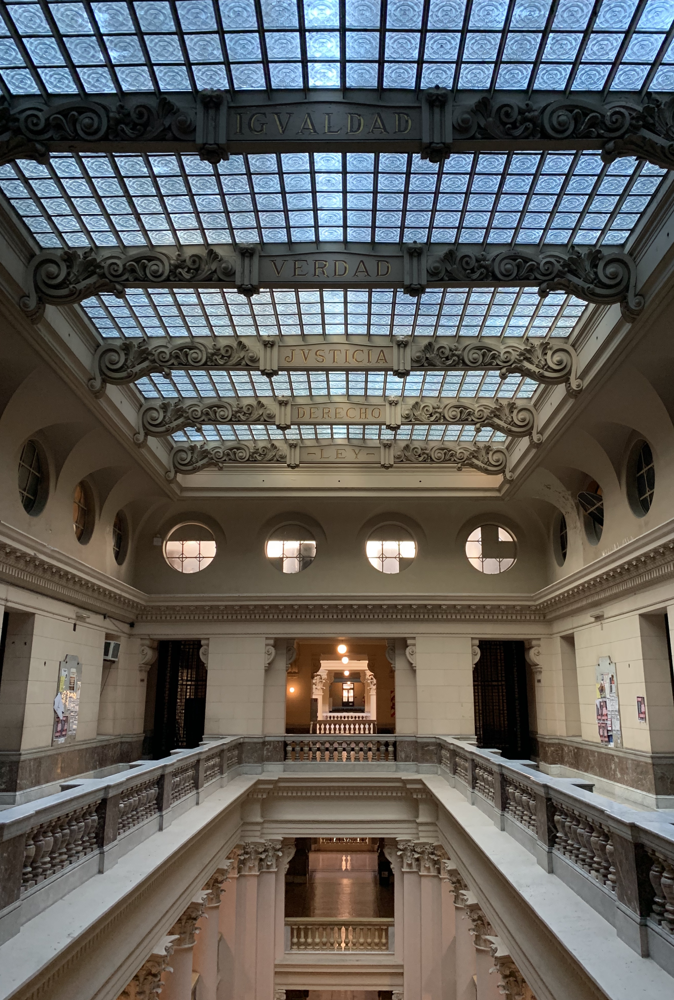
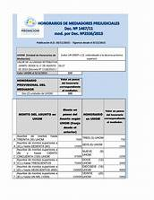

Proyecto Hodor - Asistente de Despacho
Asistente semiautomático para facilitar el trabajo en la Justicia Nacional en lo Civil
Asistente de Despacho es un proyecto de automatización de documentos judiciales que intenta ser colaborativo y ampliarse a la mayor cantidad de supuestos posibles. Automatizar las tareas repetitivas es el camino para superar la burocracia y brindar un mejor servicio de justicia.
Despachar Sucesión
Modelo de automatización para despachar la apertura en la sucesión ab-intestato.
¡Despachar!

Valor UMA
Aquí podemos consultar el valor actual e historico de la UMA con valores, fechas y links a las acordadas.
¡Consultar!
